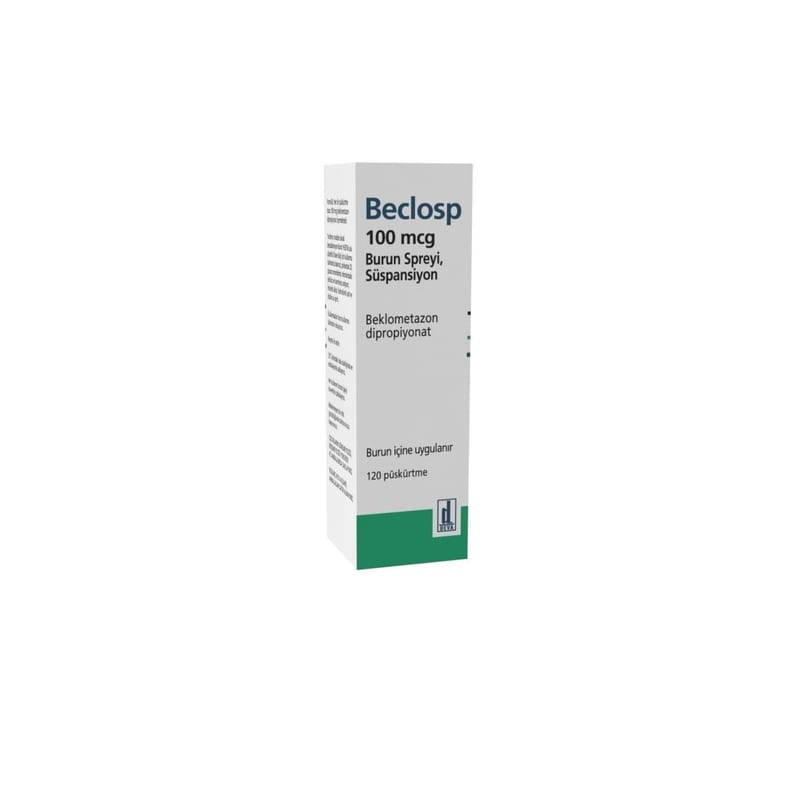

Beclosp 100 mcg Burun Spreyi, Süspansiyon, 200 doz

Ne için kullanılır
KT · Bölüm 1BECLOSP, kortizon grubuna ait bir aktif madde olan beklometazon dipropiyonat içeren ve solunum yollarında şişliği ve iltihabı (enflamasyonu) azaltan bir ilaçtır.
BECLOSP 200 veya 120 uygulama sağlayan amber renkli PET şişede sunulur. Burun içine uygulanan her bir püskürtme dozu, 100 mikrogram beklometazon dipropiyonat içerir.
BECLOSP; yıl boyunca devam eden nezle (Pereniyal Alerjik Rinit), saman nezlesi (Mevsimsel Alerjik Rinit) ve hapşırma, koku alma duyusunun azalması, burunda daimi akıntı ve tıkanıklığın (Vazomotor Rinit) tedavisinde ve önlenmesinde kullanılır.